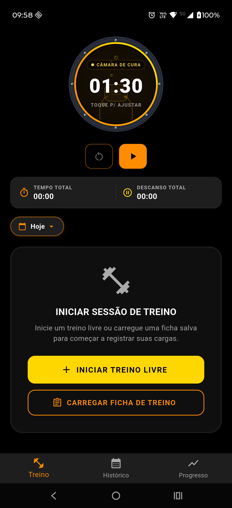
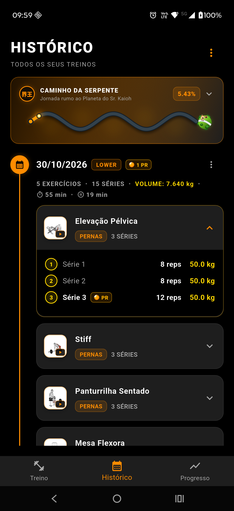
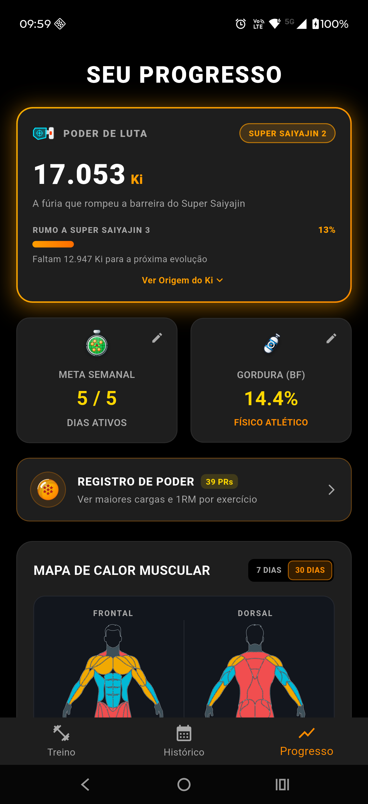
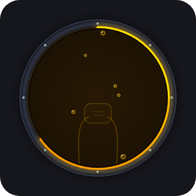
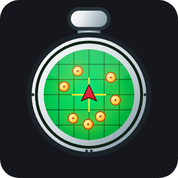
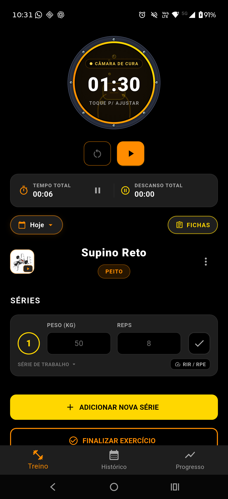
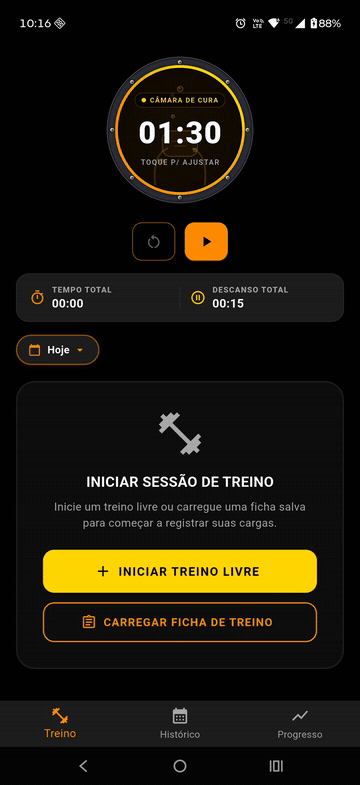

Gym Saiyajin
Aplicativo mobile offline-first para rastreamento de treinos de musculação, construído com Flutter, SQLite e arquitetura limpa com foco em ergonomia esportiva, robustez visual e temática Saiyajin.
📸 Demonstração Visual



🎨 Design System Vetorial Nativo (Canvas Puro via CustomPainters)
Todos os elementos temáticos foram construídos com CustomPainter vetorial matemático, garantindo nitidez absoluta em qualquer densidade de tela (DPI), ausência de distorções e tamanho de aplicativo ultraleve:
| Câmara de Regeneração | Chamas de Ki (Aura) | Planeta do Sr. Kaioh | Radar do Dragão | Esfera do Dragão | Cápsula Hoi-Poi |
|---|---|---|---|---|---|
 |
 |
||||
| Escotilha com micro-bolhas | Vigor e transformações | Marco de 1.000.000 km | Meta semanal de treino | Recordes batidos (PRs) | Composição corporal |
📲 Download & Instalação (APK Android)
A versão estável do aplicativo está pronta para instalação imediata no seu celular Android:
📥 Instruções para Instalação no Smartphone:
- Baixar o APK: Faça o download do arquivo
Gym.Saiyajin.v2.2.0.-.Offline.Edition.apkdiretamente no seu dispositivo Android. - Autorizar Fontes Desconhecidas: Ao abrir o arquivo baixado, caso o Android solicite, autorize a instalação a partir do navegador ou gerenciador de arquivos.
- Instalar e Treinar: Toque em Instalar e inicie o uso. O aplicativo opera 100% offline-first, sem necessidade de cadastro, criação de conta ou acesso à internet.
📚 Documentação Especializada
🥋 Portal de Engenharia & Documentação Técnica: Explore as camadas da arquitetura offline-first, o design system vetorial no Canvas do Flutter, a matemática da progressão de Ki e a telemetria esportiva navegando pelas abas superiores ou pela busca instantânea.
Para manter o repositório organizado e detalhar com profundidade cada engenharia do projeto, a documentação está dividida nos seguintes guias modulares:
- 🏛️ Arquitetura & Engenharia de Software: Detalhamento das camadas do app (Controllers, Repositories, Services, Models), schema do banco de dados SQLite (v4) com integridade referencial, estratégias de migração de banco, tratamento de ciclo de vida do SO e matriz da suíte de testes (133 testes automatizados).
- 🎨 Design System, Ergonomia & UI/UX: Princípios de usabilidade sob fadiga física, manifesto de identidade anti-caricatura (seriedade esportiva e fisiologia em primeiro lugar), design tokens, anatomia simétrica das séries, fluxo contínuo de teclado, micro-badges de PRs, proteção de layout (SafeArea/insets), arte vetorial nativa no Canvas (
DragonBallIcon,ScouterIcon,DragonRadarIcon,CapsuleIcon,PlanetaKaiohIcon,KiAuraIcon,KintoUnIcon,EscotilhaCamaraPainter), Mapa de Calor Muscular (ScouterAnatomicoWidget) e ergonomia do Histórico e do Cronômetro. - ⚡ Sistema Saiyajin & Progressão de Poder (Ki): Matemática da fórmula híbrida do Ki (Força Base, Vigor Saiyajin e Limites Superados), patamares de poder canônicos, design do Super Saiyajin 2, componentes vetoriais nativos, fórmula de Epley refinada para estimativa de 1RM, a jornada de 1.000.000 km no Caminho da Serpente, a Câmara de Regeneração Médica e a telemetria fisiológica do Mapa de Calor Muscular.
- 📸 Compartilhamento Social Personalizável: Guia completo do gerador de cartões sociais, proporções Stories (9:16) e Feed (1:1), os 3 presets de overlay (Slim Clássico, Scouter HUD e Rodapé Minimalista), personalização de cores/legenda e pipeline de captura em alta resolução (3x DPI).
- 🏋️ Guia Técnico do Catálogo de Exercícios: Procedimento operacional padrão para curadoria, download de miniaturas/GIFs (
180×180), cadastro de sinônimos brasileiros e validação automatizada dos 106 exercícios offline. - 📜 Propostas Temáticas & Próximos Passos: Histórico de implementações canônicas (Câmara de Regeneração, Caminho da Serpente, Nuvem Voadora / RIR e Mapa de Calor Muscular concluídos) e planejamento arquitetural futuro.
🚀 Funcionalidades Principais
🏋️ Treino em Tempo Real


- Catálogo Offline de 106 Exercícios com Miniaturas, GIFs Sob Demanda & Sinônimos Brasileiros:
- Miniaturas anatômicas em containers arredondados no modal de busca, na fila Próximos da Ficha, no Gerenciador de Fichas, no cabeçalho fixo do exercício ativo, nos cards do Histórico e de Exercícios Concluídos, no Registro de Poder e no Gráfico de Progressão de Carga (zero impacto de CPU/RAM na rolagem).
- Execução Animada Sob Demanda: Toque diretamente na miniatura com indicador de play para abrir o modal com o GIF animado (
180×180), equipamento, músculo alvo, sinergistas e instruções técnicas passo a passo em PT-BR — sem empurrar as séries para baixo durante o treino. - Exercícios Personalizados com Edição, Exclusão & Mídia Customizada: Crie, edite (atualizando nome e grupo muscular em cascata nas sessões e fichas) ou exclua seus exercícios personalizados, podendo associar qualquer uma das 106 animações 100% offline do catálogo ou enviar fotos/GIFs próprios da Galeria ou Câmera (
ExercicioCustomMidiaService). - Unificação de Exercícios Customizados: Associe/funda exercícios criados anteriormente a qualquer exercício padrão do catálogo com 1 toque (
AssociarExercicioModal), transferindo 100% do histórico de séries, recordes (PRs) e fichas sem perder progresso. - Nome & Divisão do Treino: Chips de seleção rápida padronizados (
Treino A,Treino B,Push,Pull,Legs, etc.) ou nome customizado digitado pelo usuário. Registrado na sessão e estampado na timeline e no card social. -
Fichas / Templates Permanentes com Reordenação Drag-and-Drop: Crie, edite, reordene exercícios clicando e arrastando (
ReorderableListView) e configure a quantidade de séries padrão por exercício ([-] X [+]). Enfileiramento em 1 toque.
-
Aparelho Ocupado? Substituição Ágil: Toque no botão de troca (
Swap) para substituir um exercício da fila por outro do mesmo grupo muscular sem alterar a ficha base. - Carga Anterior Inteligente (Sobrecarga Progressiva): O app busca o histórico do exercício e sugere a última carga e reps nos campos (
hintText) e na linha de apoio. Tocar no check com campos vazios auto-preenche a série com os valores anteriores. - Séries com Ergonomia Avançada, Nuvem Voadora (Kinto-un) & Esforço (RIR/RPE):
- Alinhamento simétrico, fluxo contínuo de teclado (
Nextpula para reps,Doneconclui a série), micro-badge dinâmicoPR ⚡em tempo real e remoção rápida de séries via gesto de deslizar (Swipe). - Classificação Biomecânica de Séries: Toque no círculo da série para alternar entre Série de Trabalho (
N), Aquecimento / Kinto-un (Wcom ícone vetorialKintoUnIconque blinda o cálculo de 1RM e evita falsos PRs), Drop-set (D) e Falha Total (F). - Métrica de Esforço Retrátil (
RIR / RPE): Seletor compacto de Reps in Reserve (RIR 0aRIR 4+/RPE 10aRPE 6) integrado à linha da série sem comprometer a velocidade de digitação. - Escotilha da Câmara de Regeneração Médica (Medical Machine / Cápsula de Namekusei):
- Cronômetro de descanso estilizado como a escotilha de inspeção blindada da câmara médica de Dragon Ball Z: aro exterior em liga de titânio escuro com 8 rebites prateados chanfrados, anel de fluido bioenergético em Ouro Super Saiyajin e Âmbar (
#FFD700\(\to\)#FF8C00), micro-bolhas de oxigênio com física de subida contínua e silhueta imersiva da máscara respiratória submersa no fundo. - Sincronização Matemática Exata: Eliminação do delay de 1s via arredondamento teto (
ceil), garantindo que o cronômetro regressivo e o contador de descanso acumulado permaneçam 100% espelhados segundo a segundo. - Telemetria Médica: Chip superior com LED pulsante dinâmico (
REGENERAÇÃO/PAUSADO/CÂMARA DE CURA) e botões de controle na paleta Saiyajin. - Cronômetro Geral de Treino & Segundo Plano:
- Duração total da sessão com controle de pausa e retomada.
- Registro contínuo do tempo total de descanso acumulado.
- Resiliência contra tela bloqueada com recálculo por timestamp e alerta sonoro/háptico nativo ao zerar o tempo.
- Encerramento Protegido & Celebração de Conquistas: Confirmação segura, cálculo imediato do Ki ganho na sessão com bônus de \(+150\) Ki por PR conquistado e disparo do modal de compartilhamento.
📜 Histórico de Sessões & Caminho da Serpente

- Caminho da Serpente (Snake Way):
- Barra de progresso senoidal contínua com curvas suaves de alta fidelidade matemática, nuvens celestiais do Outro Mundo, aura de Ki do guerreiro e o Planeta do Senhor Kaioh vetorial (
PlanetaKaiohIcon) na chegada. Sempre visível no card. - Card interativo com Kanji Kaioh oficial (界王) e alternância de dados analíticos: odômetro de ferro (meta épica de 1.000.000 km), marcos de lore canônica e métricas consolidadas (Carga Total, Tempo Total e Sessões).
- Timeline Contínua, Identificação de PRs por Série & Rótulos Padronizados:
- Navegação vertical fluida com acesso rápido a todos os exercícios e séries da sessão.
- Nós uniformes com ícone de calendário Saiyajin (
Icons.calendar_month) em laranja vibrante com sombra. - Cabeçalho harmonizado em linha única: Data + Tag da Divisão (
[ TREINO A ]) + Badge Dourado de PRs ([ ✪ 2 PRs ]). - Rastreamento de PR por Exercício e Série Ápice: Quando o card do exercício está recolhido, o badge
[🟠 PR]é exibido no cabeçalho ao lado da contagem de séries; ao expandir o card, o badge do cabeçalho é ocultado e exibido exclusivamente na série ápice que bateu o recorde daquela sessão, eliminando redundância visual. - Rótulos Descritivos de Séries (Estilo Hevy): Identificação clara por tipo de série tanto no Histórico quanto nos Exercícios Concluídos:
(☁️) Aquecimento,(1) Série 1,(D) Drop-sete(F) Falha. - Linha de métricas esportivas em caixa alta:
EXERCÍCIOS • SÉRIES • VOLUME • DURAÇÃO • DESCANSO. - Menu de Ações Unificado (
⋮): Botão discreto substituindo múltiplos controles dispersos, permitindo Compartilhar card, Editar treino e Excluir treino. - Edição Completa de Sessão Salva: Ajuste de data da sessão, alteração de nome/divisão e steppers ergonômicos de 5 em 5 minutos para duração total e tempo de descanso (com validação fisiológica que impede o descanso de ultrapassar a duração total do treino).
- Backup & Restauração Completa v2 (JSON): Exportação e importação de todo o banco SQLite (sessões e fichas permanentes), meta semanal e composição corporal (peso, altura e percentual de gordura) com opções de Mesclar Dados ou Substituir Tudo e retrocompatibilidade com a v1.
- Exclusão Segura: Confirmação modal com exclusão em cascata transacional (
ON DELETE CASCADE) no SQLite.
📈 Dashboard de Progresso & Métricas

- Medidor de Poder de Luta (Ki) & Transformações:
- Pontuação híbrida unindo força máxima nos 6 grupos musculares, quilometragem de volume histórico e bônus de recordes.
- Escala canônica de patamares: Classe Baixa \(\to\) Guerreiro Z \(\to\) Elite Saiyajin \(\to\) Super Saiyajin \(\to\) Super Saiyajin 2 \(\to\) Super Saiyajin 3 \(\to\) Instinto Superior.
- Subtítulos épicos oficiais e badge com gradiente e sombras temáticas.
- Registro de Poder (Quadro de Recordes):
- Marcado com o ícone oficial da Esfera do Dragão (
DragonBallIcon), cujas estrelas refletem dinamicamente os recordes conquistados (1 a 7 estrelas). - Lista detalhada de maiores cargas e 1RMs estimados com miniatura anatômica por exercício, busca instantânea e filtros musculares padronizados.
- Mapa de Calor Muscular Frontal & Dorsal (
muscle_mapper): - Telemetria biológica anatômica em SVG (
ScouterAnatomicoWidget&MuscleMapper) que mapeia o volume de séries válidas (excluindo aquecimentos) nos 7 grupos musculares canônicos em janelas de 7 DIAS ou 30 DIAS. - Renderização em dupla camada (
DarkThemeAnatomyProvider+_OverlayLinhasAnatomicas) que preserva a nitidez das divisões anatômicas internas em branco/prata translúcido mesmo sobre grupos musculares iluminados. - Colorização dinâmica em 4 estágios fisiológicos (Sem Estímulo, Ativado em ciano bioelétrico, Zona Ideal em ouro Super Saiyajin e Sobrecarga em rubro Kaioken), inspeção interativa por toque direto nos feixes musculares e alerta de pontos fracos (lagging muscles).
- Gráfico de Evolução de Cargas (
fl_chart): Curva analítica de sobrecarga progressiva com miniatura do exercício selecionado, filtro rápido de período (ÚLTIMOS 10,3 MESES,TUDO), espaçamento inteligente de datas no eixo X (máximo de 5 rótulos sem sobreposição) e tooltip interativo (carga × reps+ data completa). - Cálculo de IMC & Metas Corporais: Marcado com o ícone vetorial da Cápsula Hoi-Poi da Capsule Corp (
CapsuleIcon), cálculo padrão OMS em 6 faixas e atalhos de atualização rápida.
📱 Compartilhamento Social de Alta Performance


- Proporções Flexíveis: Alternância entre
STORIES (9:16)(Instagram Stories / WhatsApp Status) eFEED (1:1)(Instagram Feed / WhatsApp Chat). - Presets de Overlay:
- Slim Clássico: Minimalista, divisão e troféu de PRs com DragonBallIcon no topo, e 3 métricas de impacto (Volume, Séries, Duração) na base, valorizando 100% da foto.
- Scouter HUD: Estilo telemetria esportiva com visor holográfico (
ScouterIcon), ganho de Ki e contador de PRs comDragonBallIcon. - Rodapé Minimalista: Topo totalmente limpo e painel translúcido inferior (frosted glass).
- Customização Total: Alternância de cor (Branco vs Dourado), campo para
@handledo atleta e fallback texturizado premium caso não deseje usar foto.
🛠️ Stack Tecnológico
- Flutter / Dart (Framework mobile multiplataforma)
- sqflite (Banco de dados relacional offline-first com integridade referencial e migrações)
- share_plus (Compartilhamento nativo de cards de imagem PNG e backups JSON)
- image_picker (Captura de fotos via câmera e seleção da galeria para o card de treino)
- file_picker (Seleção de arquivos de backup JSON no armazenamento local)
- path_provider (Gerenciamento de caminhos temporários e de documentos)
- fl_chart (Renderização gráfica analítica de curvas de progressão de carga)
- muscle_mapper (Renderização anatômica interativa Frontal e Dorsal em SVG para o Mapa de Calor Muscular)
- shared_preferences (Armazenamento de preferências e configurações chave-valor)
- flutter_local_notifications & timezone (Notificações locais agendadas e resiliência de alarmes)
- flutter_ringtone_player (Alerta sonoro nativo de alarme para encerramento de descansos)
- vibration (Feedback háptico de hardware)
- flutter_test & sqflite_common_ffi (Suíte robusta de 133 testes unitários, de widgets e de persistência SQLite em memória)
🏛️ Estrutura de Arquivos
gym_saiyajin/
├── .github/
│ └── workflows/
│ └── deploy-docs.yml # Pipeline de CI/CD para deploy no GitHub Pages
├── docs/ # Documentação técnica especializada
│ ├── ARQUITETURA.md # Camadas, SQLite (v4), migrações e testes
│ ├── UI_UX.md # Design System, ergonomia, CustomPainters e Heatmap
│ ├── SISTEMA_SAIYAJIN.md # Matemática do Ki, patamares, 1RM e telemetria
│ ├── COMPARTILHAMENTO_SOCIAL.md # Presets, proporções 9:16/1:1 e exportação
│ ├── GUIA_CATALOGO_EXERCICIOS.md # Curadoria e inclusão de exercícios offline (180x180)
│ ├── ROADMAP_TEMATICO.md # Propostas canônicas concluídas e backlog
│ ├── stylesheets/ # Estilos customizados (Laranja & Ouro Saiyajin)
│ │ └── extra.css
│ ├── javascripts/ # Configurações de renderização (MathJax)
│ │ └── mathjax.js
│ └── images/ # Assets visuais da documentação
├── hooks/ # Lifecycle Hooks do MkDocs (Docs-as-Code)
│ └── sync_readme.py # Sincronização automática e sem perdas (UTF-8)
├── lib/
│ ├── main.dart # Ponto de entrada, PopScope e navegação base
│ ├── controllers/ # Gerenciamento de estado reativo (ChangeNotifier)
│ │ ├── historico_controller.dart
│ │ ├── progresso_controller.dart
│ │ └── treino_controller.dart
│ ├── database/ # Helper do SQLite, PRAGMAs e migrações (v1 -> v4)
│ │ └── db_helper.dart
│ ├── models/ # Entidades de domínio imutáveis com serialização
│ │ ├── catalogo_exercicios.dart # Catálogo offline de 106 exercícios, músculos, assets e sinônimos
│ │ ├── exercicio.dart
│ │ ├── ficha_treino.dart
│ │ ├── poder_luta.dart
│ │ ├── recorde_pessoal.dart
│ │ ├── serie.dart
│ │ └── sessao_treino.dart
│ ├── repositories/ # Acesso a dados transacionais e queries preparadas
│ │ └── treino_repository.dart
│ ├── screens/ # Telas principais (Treino, Histórico, Progresso)
│ │ ├── historico_screen.dart
│ │ ├── progresso_screen.dart
│ │ └── treino_screen.dart
│ ├── services/ # Infraestrutura, Hardware e Compartilhamento
│ │ ├── backup_service.dart
│ │ ├── card_share_service.dart
│ │ ├── exercicio_custom_midia_service.dart
│ │ ├── notification_service.dart
│ │ └── preferences_service.dart
│ ├── theme/ # Design Tokens e paleta de cores centralizada
│ │ └── app_colors.dart
│ └── widgets/ # Componentes visuais atômicos e CustomPainters
│ ├── caminho_serpente_progress_bar.dart # Barra senoidal contínua e Planeta Kaioh
│ ├── capsule_icon.dart # CustomPainter da Cápsula Hoi-Poi da Capsule Corp
│ ├── celebracao_transformacao_modal.dart
│ ├── compartilhar_card_modal.dart
│ ├── config_tempo_descanso_modal.dart
│ ├── cronometro_widget.dart
│ ├── dragon_ball_icon.dart # CustomPainter das Esferas do Dragão (1-7 estrelas)
│ ├── dragon_radar_icon.dart # CustomPainter do Radar do Dragão (meta semanal)
│ ├── escotilha_camara_painter.dart # CustomPainter da Câmara de Regeneração Médica
│ ├── exercicio_midia_widget.dart # Miniaturas arredondadas e modal de GIF sob demanda
│ ├── gerenciar_fichas_modal.dart
│ ├── historico_card_widget.dart # Card de exercício com transição inteligente de PR
│ ├── kinto_un_icon.dart # CustomPainter da Nuvem Voadora (séries de aquecimento)
│ ├── ki_aura_icon.dart # CustomPainter da Aura de Ki Saiyajin
│ ├── metricas_dashboard_widget.dart
│ ├── modal_ajuste_tempo_sessao.dart
│ ├── modal_editar_sessao.dart
│ ├── modal_encerrar_treino.dart
│ ├── modal_importar_backup.dart
│ ├── planeta_kaioh_icon.dart # CustomPainter do Planeta do Sr. Kaioh
│ ├── poder_luta_card_widget.dart
│ ├── progresso_grafico_widget.dart
│ ├── quadro_recordes_modal.dart
│ ├── scouter_anatomico_widget.dart # Mapa de Calor Muscular Frontal e Dorsal (MuscleMapper)
│ ├── scouter_icon.dart # CustomPainter do Scouter com lente e telemetria
│ ├── selecao_exercicio_modal.dart
│ └── serie_row_widget.dart
├── test/ # Suíte de 133 testes automatizados
│ ├── backup_test.dart
│ ├── caminho_serpente_test.dart
│ ├── capsule_icon_test.dart
│ ├── catalogo_exercicios_test.dart
│ ├── compartilhar_card_test.dart
│ ├── cronometro_widget_test.dart
│ ├── dragon_ball_icon_test.dart
│ ├── dragon_radar_icon_test.dart
│ ├── ficha_test.dart
│ ├── imc_test.dart
│ ├── kinto_un_icon_test.dart
│ ├── ki_aura_icon_test.dart
│ ├── notification_service_test.dart
│ ├── poder_luta_test.dart
│ ├── pr_test.dart
│ ├── render_preview_test.dart
│ ├── scouter_anatomico_test.dart
│ ├── serie_row_widget_test.dart
│ ├── tempo_treino_test.dart
│ ├── treino_controller_test.dart
│ ├── treino_repository_test.dart
│ └── volume_sessao_test.dart
├── mkdocs.yml # Configuração do portal MkDocs Material
├── pubspec.yaml
└── README.md
🧪 Como Executar e Testar
Pré-requisitos
- Flutter SDK instalado (
>= 3.22.0) - Dispositivo Android conectado via USB (com depuração ativada) ou emulador
Comandos
# Obter dependências do projeto
flutter pub get
# Executar a suíte completa de testes automatizados (133 testes)
flutter test
# Verificar análise estática de código (Linter)
dart analyze
# Executar a aplicação em modo debug
flutter run
# Compilar pacote de produção otimizado (Release APK)
flutter build apk
📄 Licença & Termos de Uso
Este projeto foi desenvolvido por Luan Pereira Diniz para fins de demonstração técnica e exibição em portfólio profissional de Engenharia de Computação.
- Código e Arquitetura: Licenciados para visualização, estudo acadêmico, compilação local e auditoria técnica. É estritamente proibida a exploração comercial, sublicenciamento, cópia não autorizada ou publicação em lojas de aplicativos (como Google Play Store, App Store ou equivalentes) sem autorização prévia por escrito do autor.
- Tributo & Fair Use: "Dragon Ball", "Dragon Ball Z", "Saiyajin" e elementos visuais associados são marcas registradas e propriedades intelectuais de Bird Studio / Shueisha / Toei Animation. Este é um tributo esportivo independente, sem fins lucrativos e sem qualquer vínculo oficial.
- Mídia de Exercícios (Miniaturas & GIFs 180×180): Provenientes do dataset
hasaneyldrm/exercises-dataset— © Gym visual — https://gymvisual.com/, redistribuídos em resolução180×180com a devida atribuição de direitos autorais.
Consulte o arquivo LICENSE para o texto completo dos termos.